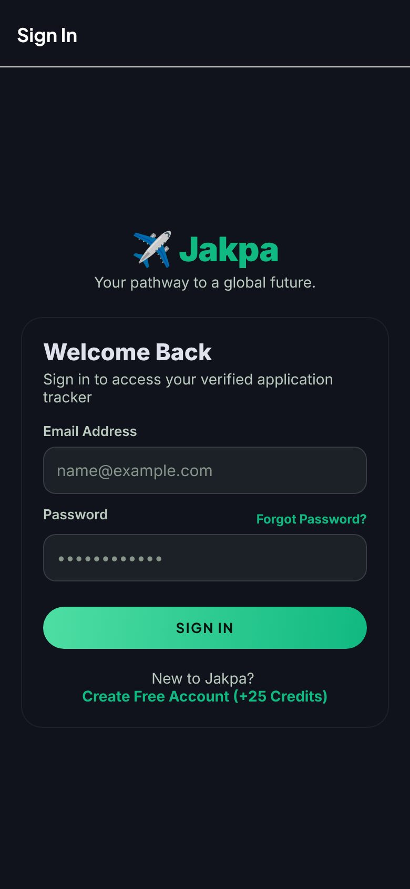
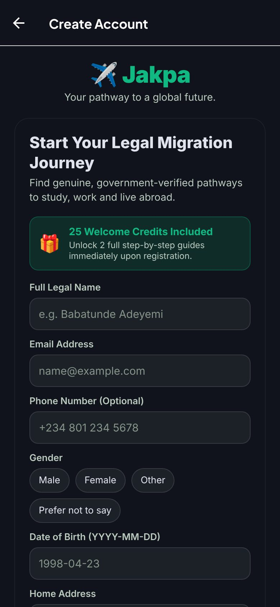

← All work
Case study · Mobile app & website · In development
Jakpa
Jakpa is a mobile-first app I'm building to help Nigerians aged 18 to 45 find legitimate ways to study, work and live abroad. It also has a website with the same features and design, so people can use whichever they prefer.
RoleProduct, UI/UX & full-stack development
StackReact Native (Expo), TypeScript, Node API
PlatformsAndroid, iOS & web
StatusIn development

Sign in

Create account, with welcome credits included
The problem
Many people who want to relocate legally struggle to tell genuine routes from scams. I'm putting schools, scholarships and step-by-step visa guides in one app, built for phones and slow networks.
What it includes
- Guides and opportunities: schools, scholarships and step-by-step visa guides, with verified and unverified content clearly tagged.
- Credits system: free and premium modes, with monthly credits and the option to buy more.
- Secure accounts: two-step verification with backup codes, and account deletion.
- Payments: Paystack checkout, with app-store payments as a backup.
- Superadmin portal: control of the credit system, content and users.
- Mobile app and website: the same features and design on Android, iOS and the web, using one shared database.
- Mobile-first design: large tap targets, skeleton loading for slow networks and an offline fallback.
The design
I used a dark interface with a green accent, large touch targets and short, friendly copy aimed at young adults. The sign-up screen leads with the welcome credits so new users see the value straight away.
App icon